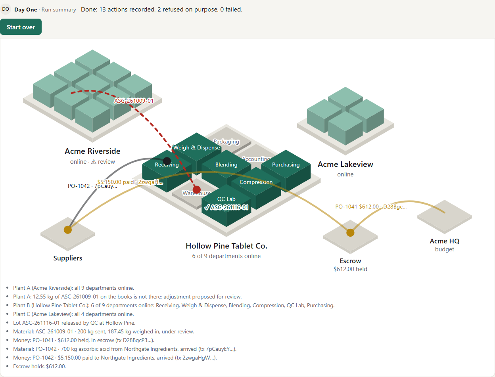

KKevin· set up Plant B
Loaded 3 facilities, 33 materials, 12 vendors, 7 batch records, 56 days of history.
Kevin read 3 batch records from the scan folder and has one question for you. Nothing is posted until you confirm.
Loaded 3 facilities, 33 materials, 12 vendors, 7 batch records, 56 days of history.

Plant B: 0 of 9 departments online. Plants A and C were already on Acme's systems.
Step by step through the recorded run. All companies, people and numbers are fictional.